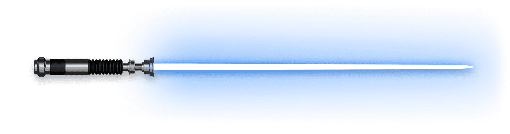

JEDI AND SITH
Information about heroes and villains in Star War Series

JEDI
A Jedi, also known by the title of Lord Jedi in ancient times, was a devotee to the ways of the Jedi Order, an ancient order of protectors united by their ability to harness the power of the Force. Adhering to a doctrine that favored the light side of the Force, the Jedi aspired to attain a state of inner tranquility through calmness and meditation while avoiding emotions affiliated with the dark side of the Force, such as anger and hatred.

SITH
The Sith, also referred to as the Sith Order, was an ancient religious order of Force-wielders devoted to the dark side of the Force. Driven by their emotions, including hate, anger, and greed, the Sith were deceptive and obsessed with gaining power no matter the cost.

ANAKIN SKYWALKER
Affliations : Jedi
Born : Tatoonie
Height : 1.88m
Appearances : Return of the Jedi, The Phantom Menace,Attack of the Clones,Revenge of the Sith
Discovered as a slave on Tatooine by Qui-Gon Jinn and Obi-Wan Kenobi, Anakin Skywalker had the potential to become one of the most powerful Jedi ever, and was believed by some to be the prophesied Chosen One who would bring balance to the Force. A hero of the Clone Wars, Anakin was caring and compassionate, but also had a fear of loss that would prove to be his downfall
Weapon :


OBI-WAN KENOBI
Affliations : Jedi
Born : Stewjon
Height : 1.8m
Appearances : A New Hope, The Phantom Menace,Attack of the Clones,Revenge of the Sith
A legendary Jedi Master, Obi-Wan Kenobi was a noble man and gifted in the ways of the Force. He trained Anakin Skywalker, served as a general in the Republic Army during the Clone Wars, and guided Luke Skywalker as a mentor.
Weapon :

DARTH MAUL
Affliations : Sith
Born : Dathomir
Height : 1.8m
Appearances : The Phantom Menace
A deadly, agile Sith Lord trained by the evil Darth Sidious, Darth Maul was a formidable warrior and scheming mastermind. He wielded an intimidating double-bladed lightsaber and fought with a menacing ferocity. Though he fell in battle against Obi-Wan Kenobi, the Zabrak from Dathomir would prove to be much harder to destroy than originally believed.
Weapon :


DARTH SIDIOUS
Affliations : Sith
Born : Naboo
Height : 1.73m
Appearances : Star Wars: The Empire Strikes Back, Star Wars: Return of the Jedi, Star Wars: The Phantom Menace, Star Wars: Attack of the Clones, Star Wars: Revenge of the Sith, Star Wars: The Rise of Skywalker, Star Wars Rebels, Star Wars: The Clone Wars
The dark side of the Force is a pathway to many abilities some consider to be unnatural, and Sheev Palpatine is the most infamous follower of its doctrines. Scheming, powerful, and evil to the core, Darth Sidious restored the Sith and destroyed the Jedi Order.